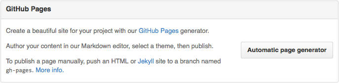

部署gitbook至github.io
使用项目的Pages服务
创建仓库与分支
- 登陆到Github，创建一个新的仓库，名称我们就命名为
books，这样我就得到一个books仓库。 - 克隆仓库到本地：
git clone git@github.com:/USER_NAME/books.git - 创建一个新分支：
git checkout -b gh-pages，注意，分支名必须为gh-pages。 - 将分支push到仓库：
git push -u origin gh-pages。 - 切换到主分支：
git checkout master。
经过这一步处理，我们已经创建了gh-pages分支了，有了这个分支，Github会自动为你分配一个网址。
你可以在项目页面右下角setting中看到：

同步静态网站代码到分支
下面我们就可以将build好的静态网站代码同步到gh-pages分支中去了：
- 切换出master分支目录。我们需要将
gh-pages分支内容存放在另外一个目录中 - 克隆
gh-pages分支：git clone -b gh-pages git@github.com:USER_NAME/books.git book-end。这步我们只是克隆了gh-pages分支，并存放在一个新的目录book-end。 - Copy静态网站到
book-end目录中（只要复制_book文件夹里的内容就可以） - Push到仓库
然后，等十来分钟后，你就可以访问到你的在线图书了。以后，只要你每次修改之后，将生成静态网站Copy到book-end目录，然后Push一下就OK了。
遇到的问题
1. push分支不成功
随便写个文件，然后再进行push
touch index.html
git add .
git commit -m 'init'
git push -u origin gh-pages
2. push到仓库以后build不成功
点到build失败的记录里去，查看详情
发现是缺了个文件，那就创建个文件
[submodule "book-end"]
path = book-end
url = git://github.com/USERNAME/books.git
然后提交后会自动进行build
3. build不成功还有个原因是授权
找到repo的Settings-》Actions-》General -》Workflow permissions

4. 重新push失败，提示有冲突
那就先操作拉取，再push
git pull
git push -f origin gh-pages // 强制push